Johnny Green: Mascot of the Burra Miners
Spelled Johnny, with a y. For more than 170 years a succession of miner-shaped figures has watched over the Burra Burra Mine, fallen, been repaired or replaced, and returned to the skyline. The origins remain disputed. The public meaning is not: mascot, survivor and memorial.
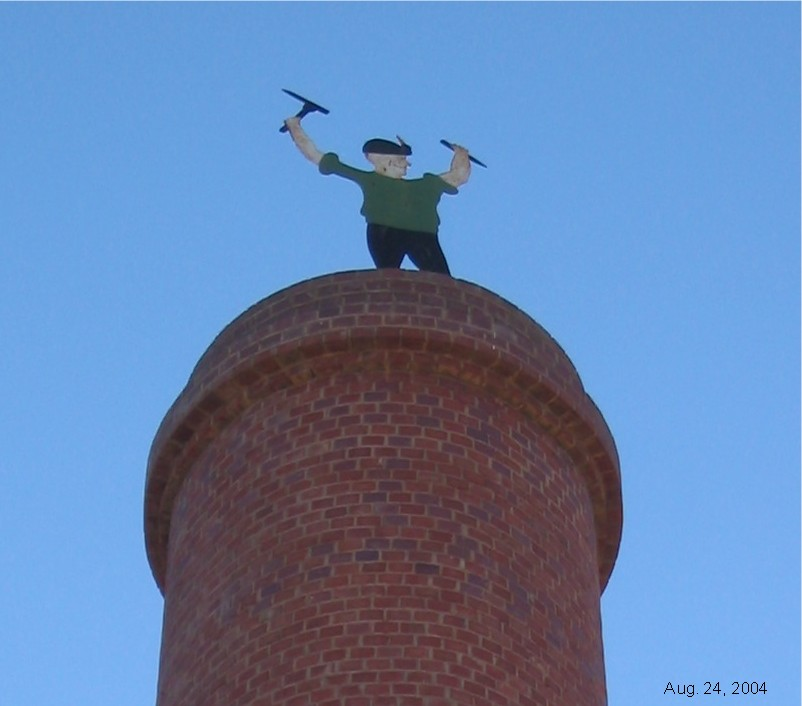
Contents
Who—or what—is Johnny Green?
Johnny Green is the name given to a succession of human-shaped effigies raised above the Burra Burra Mine. The familiar figure is a miner in a black hat, holding a pick in one hand and a gad in the other.
There may once have been a real person behind the name, but the evidence does not establish one. Contemporary and remembered explanations disagree: a mine blacksmith made the figure; Sir Henry Ayers commissioned it; it represented the shepherd who found the ore; or it was made or erected by a man named Beal and was originally “Johnny Beal”. What can be established is the figure’s public life. For more than 170 years, successive Johnnys have watched over the mine, fallen, been repaired or replaced, and returned to the skyline.
The name is in print by 1901. The Northern Argus of 3 July heads its paragraph “Johnny Green”, then immediately says that nobody knows how the battered figure came to stand on the engine-house or whom it represents. Elizabeth A. Ward, writing “That there Man” in her 1936 Memories of Burra series, had never heard him named at all: he was “that theere Man upto Mine”. Both can be true. The public name and the older Cornish nickname lived alongside each other.
The stable name in Burra’s later records is Johnny Green. He is usually described as the miners’ mascot and, in present-day interpretation, as a memorial to the Cornish miners—the “Cousin Jacks”—and their fellow workers.
Three bodies, several perches
Ian Auhl’s history of Johnny Green, pages 17–22 in the Ian Auhl Collection, describes three successive bodies:
- a wooden figure on the shears above Roach’s pump-house;
- a more durable sheet-iron figure, first placed at Schneider’s engine-house and later moved to Morphett’s shaft; and
- the 1972 facsimile on the resited Peacock’s Chimney.
This account resolves an apparent problem in the earlier chronology. The wooden Johnny remained visible on Roach’s shears in 1855, while an iron “new Johnny” had already been placed at Schneider’s in 1852. These were two bodies, not one figure moving impossibly between both sites.
Roach’s pump-house, 1849–1855
Auhl says the first Johnny was a hastily made wooden figure, erected on the shears when Roach’s pump-house was completed, probably in 1848. The engine-house itself is later than that. Roach’s Cornish engine began pumping on 20 October 1849. The wooden figure cannot stand on those shears before the shears existed.
S. T. Gill’s February 1850 views of the mine show him there: a small miner-shaped figure on the timber shears beside Roach’s stone engine-house, with the Union Jack above. Several versions survive. The Burra History Group mine timeline reproduces the copy dated 10 February and held by the Burra Regional Art Gallery. The Art Gallery of South Australia holds another version, accession 0.1352, whose label is dated 26 February 1850. Auhl’s own Johnny Green pamphlet captions the same composition as 1850.
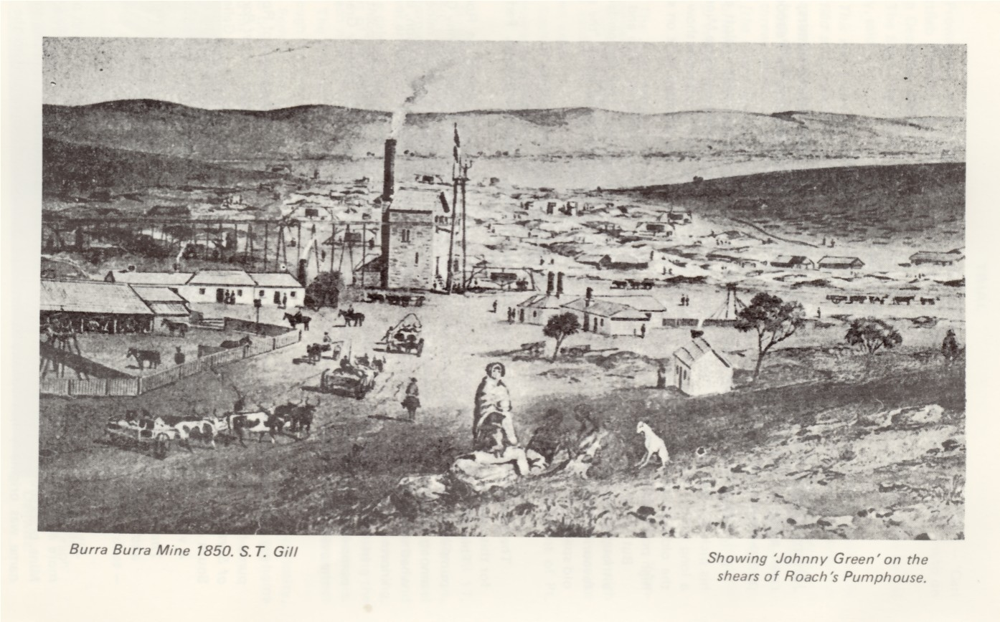
One Auhl-collection photograph of this view is labelled “BURRA BURRA MINE 1847”. The card is wrong. The painting is the 1850 surface-operations scene: Roach’s chimney, shears, flag and figure.
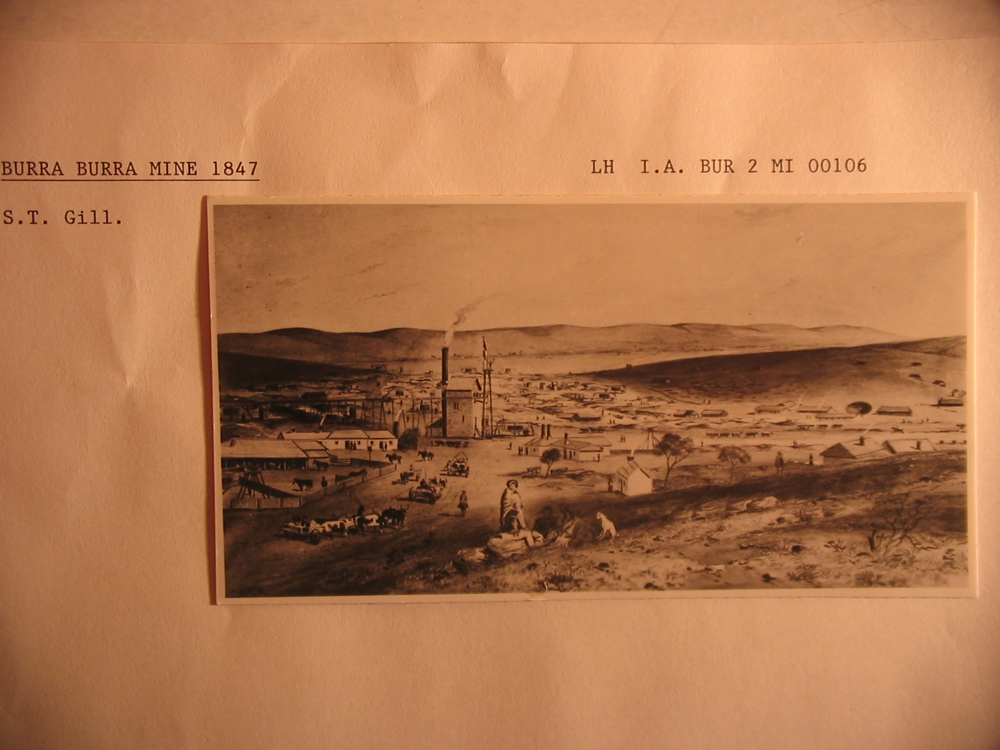
Another Auhl transparency is labelled April 1848. Gill did paint the mine in April 1847, but those views show horse-whims and the old smelting-house, not Roach’s engine. Steam pumping and the shears came later. The first secure picture of the figure is February 1850.
The later caption identifies the figure as Johnny Green, but it does not prove that people used that name in 1850. It does prove that a miner-shaped figure was already part of the mine’s skyline. In March 1855, a visitor reported in the Adelaide Observer that, although Roach’s engine had been removed, “the figure of the miner with his pick and gad still occupies its old place”.
Schneider’s engine-house, 1852–1858
When Schneider’s engine-house was completed in 1852 for a new 250-horsepower Cornish engine, the iron Johnny was placed high on its bob-platform. A painting by William Bentley shows him there in 1857.
Johnny therefore overlooked the ceremonial start of Schneider’s engine. Henry Ayers, secretary of the South Australian Mining Association, christened it by throwing a bottle of champagne at the beam; the directors followed, then lunched at Captain Roach’s residence and dined with mine captains, engineers and Kooringa residents at Barker’s Burra Hotel.
Morphett’s shaft, 1858–1925
In 1858 the iron Johnny was moved to the shears or poppet-head platform above Morphett’s shaft. He remained there for 67 years, outlasting the underground mine’s closure in 1877. An Auhl-collection photograph of Morphett’s pumphouse, about 1880, shows him aloft on the shears while the beam and main rod are still intact. Later photographs from about 1910 show him still in place.
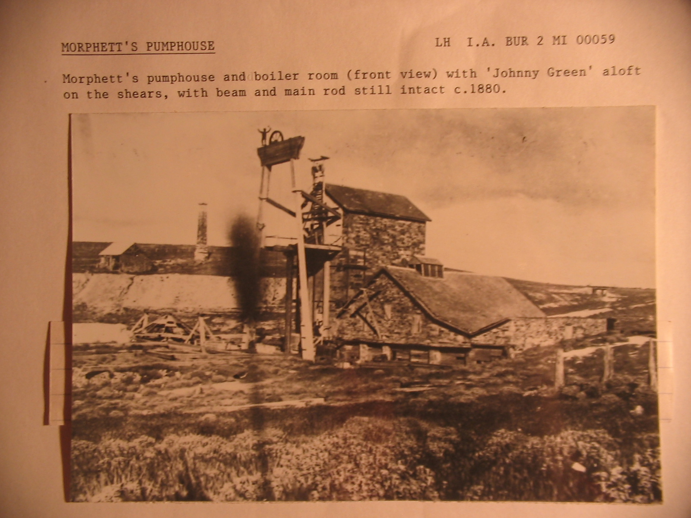
For Burra children he was more than an industrial ornament. On 13 October 1936 the paper printed “That there Man” as part of Elizabeth A. Ward’s Memories of Burra. She remembered him “in all his glory standing erect upon the big engine house, pick and gad in hand, a representative of ‘That there Cornish Miner’”. She had never heard a personal name. Mothers getting unwilling children to bed threatened that “that there Man up along to Mine” would come peeking in the window. Boys carrying their fathers’ cribs argued whether he came down when the clock struck twelve, and how he got up again. The story made him both guardian and bogeyman.
Auhl later quoted the piece under her name, then could not identify her when he compiled Burra-Burra Reminiscences. The Burra In The News editors think she is Elizabeth Ann Ward (born 10 October 1861 at Clare to Richard Ward and Elizabeth née White; died 5 June 1952), who was at school in Burra about 1870–1874 and later a Salvation Army member and Sunday-school teacher in the town for 61 years. The identification is likely, not proven.
Fire, recovery and the Mine Bridge pole
The fire of 5 December 1925
Fire destroyed the timber structures around Morphett’s shaft on Saturday 5 December 1925. Auhl’s pamphlet once gave Saturday 12 December; the court date rules that out. The boys who started the fire appeared at Redruth Court on Thursday 10 December. Both 5 and 12 December were Saturdays; only the earlier one can precede that hearing. The 2008 BHG booklet repeats Saturday the twelfth.
The 16 December report is the fullest contemporary account. Smoke was seen about 11 a.m. from the top storey of the small engine-house close to Morphett’s shaft. Residents beat out burning grass, but people living at the mine tried to fight the building fire themselves and did not raise the alarm. Between 2 and 3 p.m. it was beyond control. The large engine-house over the shaft caught; the timber “burnt like matches”. Towards midnight a crowd watched the blazing poppets fall. On the platform, some 50 feet up, stood a life-size miner beside a five-foot pulley wheel. The wheel broke at white heat. The figure was “not badly damaged”. Morphett’s shaft, heavily timbered, went on burning; on Sunday hundreds came to watch smoke rise and hear timber crash into the water. The famous echo, the paper remarked, was the only thing left intact.
The first report put a round stone hammer and chisel in his hands. A correction on 23 December identified them as a pick and miner’s gad, with a miner’s hat and a place for a candle. That is the kit later Johnnys still carry.
The same first report guessed that lads had been smoking pigeons out of the old buildings. Court evidence the same week was more precise. Before JPs M. A. Radford and E. F. Marston, Thomas William Sedgeman, aged 13, and Hurtle C. Allen, a few days short of 12, pleaded guilty to lighting a fire to smoke out rabbits without clearing a width of seven feet around the site. They had gathered manure under the floor of the engine-house a little distant from Morphett’s shaft, covered it with bags, seen no rabbits, walked to the mine pool, looked back, and run. The bench convicted them and ordered them to come up for sentence when called upon. A 1972 recap repeats the pigeons rumour and then points back to this rabbit evidence. The cause is therefore the boys’ fire under the engine-house floor, not a mystery and not pigeons.
An Auhl-collection photograph records Morphett’s pumphouse after the fire, about 1926.
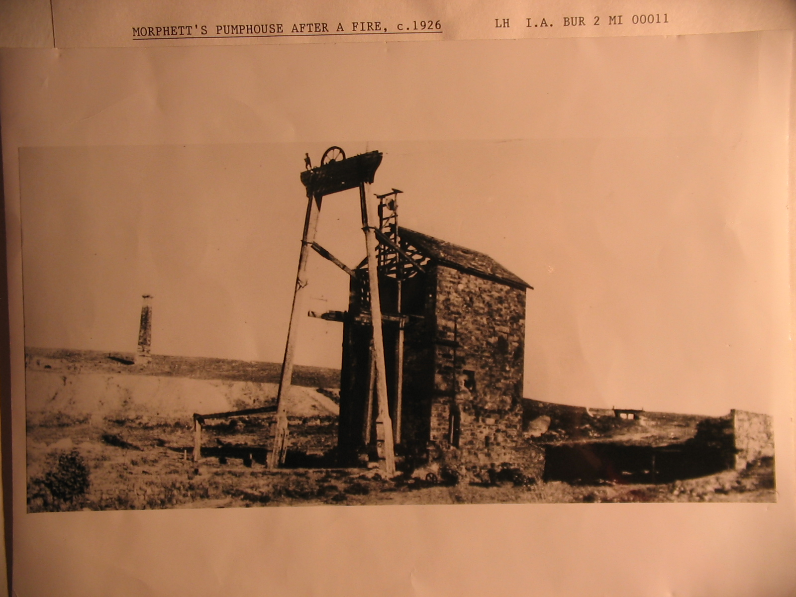
1926: a silent cop, a rotunda, The Miner’s Rest
Johnny did not go straight from the ashes to the Mine Bridge pole. For months the town argued about where a recovered miner should stand.
In January 1926 the council decided to ask A. J. and P. A. McBride, owners of the mine property, to present the steel effigy brought down in the fire so that it might be erected in some prominent place. In February it resolved to mount him on a post at the South Australian Farmers’ Union corner as a “silent cop”—a dummy used to discipline traffic at an intersection. The Mayor opposed that and wanted him on top of the rotunda. A “Lifetime Resident” then suggested the proposed shelter shed on the main road. In March Mrs Pledge, writing anonymously, asked that the Aberdeen Road shelter be called “The Miner’s Rest” and carry the figure.
On 6 April 1926 the silent-cop motion was rescinded. Cr Kellaway moved the shelter shed. Cr Woollacott said that was too low; he moved an amendment that the figure stand near the mine road on a high pedestal, pointing toward the mine. The amendment carried. That is close to where Johnny eventually went. It still took seven years.
The 1926 reports, as extracted, speak of “the miner’s effigy”. The name Johnny Green is supplied in later editorial notes. By 1929 the Benevolent Society was asking, in those words, “Where is Johnny Green?”
From the council depot to the Mine Bridge, 1929–1933
Fred Pascoe reportedly recovered the iron figure. The Burra council overseer, H. Wilson, and another employee repaired it, but Johnny remained out of public view. By 1933 he had spent several years in the council depot.
The McBrides gave the effigy and the Mine Pool to the town. The reconstructed figure weighed about 30 pounds. The council proposed mounting him 25 feet high on available iron rod, described in one report as material from a weathercock, near the Mine Bridge.
Frank Treloar was asked to provide an inscription. His proposed text presented Johnny as the mascot of a mine that had given South Australia and its early pioneers “their financial start in life” through employment and land settlement. The council debated whether the re-erection deserved a ceremony. Some members saw a chance to honour an old landmark and raise money for the unemployed; others objected to the expense or thought old landmarks impeded progress. By September 1933 the overseer reported that Johnny was as solid as when first erected, apart from a few bullet holes, and had been given two coats of paint.
Johnny was eventually erected on a pole in McBride’s paddock near the Mine Bridge. By 1949 he had become a possible tourist attraction: councillors discussed moving him to a wishing well that might raise money in the manner of Gundagai’s Dog on the Tuckerbox.
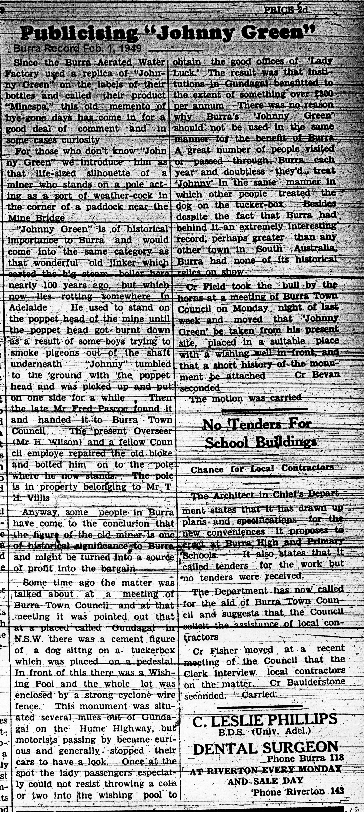
A local emblem
Johnny Green’s life as a symbol extended well beyond the mine.
- Minespa: In 1949 the Burra Aerated Water Factory used a replica on the labels of its Minespa drinks, renewing public interest in the figure.
- Johnny Green Theatrette: In March 1967 the Burra Camera Club took a ten-year lease on the old Town Hall dressing rooms and named the 17-foot room the Johnny Green Theatrette. By July it needed only paint. By March 1968 the club was meeting there on the fourth Monday of each month.
- South Australian mining: By 1987 the South Australian Chamber of Mines had adopted Johnny Green as a symbol on its stationery and literature. Its journal was titled Johnny Green’s Journal.
- Visitor Centre: A larger-than-life artistic version stood in the Burra Visitor Centre by 2006. An obituary records that former Burra resident Leo Sturman made it.
- “Who Was Johnny Green?”: In 2012 Burra Community School students researched and tested a mobile-phone history and science trail through 13 Burra locations. The project drew on the State Library of South Australia and this website.

These uses did not replace the mine figure. They show how Johnny moved from industrial relic to a portable emblem of Burra and, eventually, of the state’s mining industry.
Cut down and raised again
The pole at the mine entrance was already a fragile perch. A Jenner family note, kept with Meredith Satchell’s papers, says that in 1960 Rev. R. S. Jenner, newly arrived Methodist minister, found Johnny on the ground with the guy wires broken. The church youth club stood him up again. Until then the coat had been red; Jenner thought that made him look like a communist and painted it green. BITN confirms Jenner’s induction in January 1960 and his transfer to Kapunda in January 1964. It does not report the youth-club repair. The green coat is a later tradition, not a nineteenth-century fact.
On 9 August 1966 the paper announced that Johnny was “to be transferred to a position above the building housing the old jinker”. No later Burra In The News snippet records that the move was carried out. When Auhl wrote in August 1972, he still had the iron figure on “its pole at the mine entrance” until “New Year Vandals” tumbled it a few years earlier. His pamphlet, and the BHG booklet after it, date that fall to 1967. The limbs were then riveted together. Auhl has him resting in the jinker shed, later with the National Trust; the BHG booklet says only “put into storage”. That National Trust claim is not corroborated. The 1989 mine-artefact register, updated in 2023 to 129 numbers, lists bedstones, kibbles, tools and boilers. It does not list an iron miner. In May 1973 the District Council told Samin and the Trust that mine items were Council property held by the Burra branch, and that an inventory should be made. If the second Johnny was still a mine artefact in Trust care, he ought to appear in that register. He does not. Morphett’s Enginehouse guide talks do not mention him either. The Trust collection does hold the Minespa Johnny Green silhouette, and a large Peacock’s Chimney photograph set from the 1971 demolition through the 1972 rebuild. The branch history of that campaign names O’Connor, Cockington and Auhl; it does not mention making or storing a Johnny.
BITN has no contemporary report of the 1967 vandalism. A January 1963 New Year’s Eve incident at the mine entrance concerned signposts, not Johnny. The 1966 jinker-roof transfer remains an announcement. The 1960 drop and the 1967 fall remain recollections. A Fuss slide labelled 1977 still shows a miner on a guy-wired pole, while another slide from the same batch shows the third Johnny already on Peacock’s Chimney. The pole photograph may be misdated; it should not overturn Auhl without a caption.
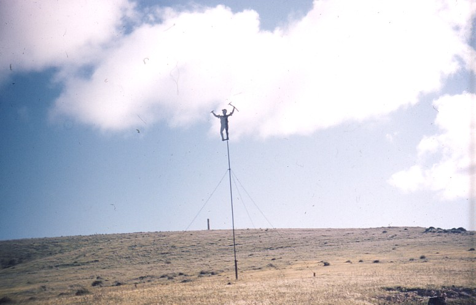
Open-cut mining resumed in the early 1970s under Samin Ltd. Peacock’s engine-house and chimney stood in the way. The engine-house was demolished. The chimney was saved.
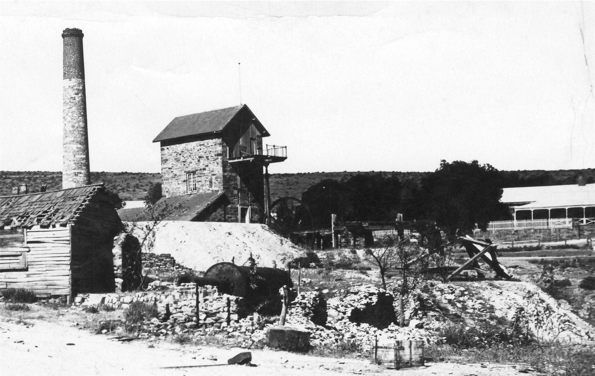
Trust members Gerry O’Connor, Murray Tiver and Dudley Cockington took it down from the inside, without scaffolding, marking each stone with coloured paint by layer so that it could be rebuilt in order. Gerry and Carmel O’Connor donated the land at the mine entrance. The foundation was poured by hand with three cement mixers and volunteer labour.
Les Hosking of Samin Ltd cut out the third Johnny Green. The 1972 reports say the back of his gad is inscribed L. Hosking 25/8/72. The new figure was a facsimile of its predecessors rather than another repair of the old sheet-iron body. In June 1987, Venturers’ leader David Jennings and Queen’s Scout John Jones climbed the chimney, measured Johnny at 66 inches, and read the maker as L. G. Hosking with the date 23 August 1972. The inscription itself, recorded in 1972, is the better witness for the day it was cut; the climb is the better witness for the height.
The resited chimney, restored at a cost of nearly $10,000 using professional and voluntary labour, was formally unveiled by South Australian Governor Sir Mark Oliphant in October 1972, during the first Burra Copper Festival. Johnny’s new place on Peacock’s Chimney joined the miners’ mascot to a surviving piece of mining fabric.
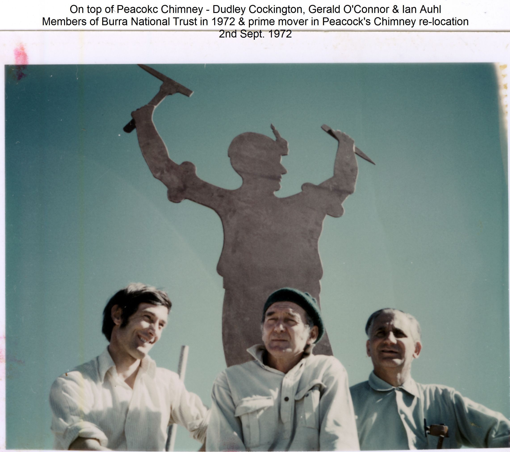
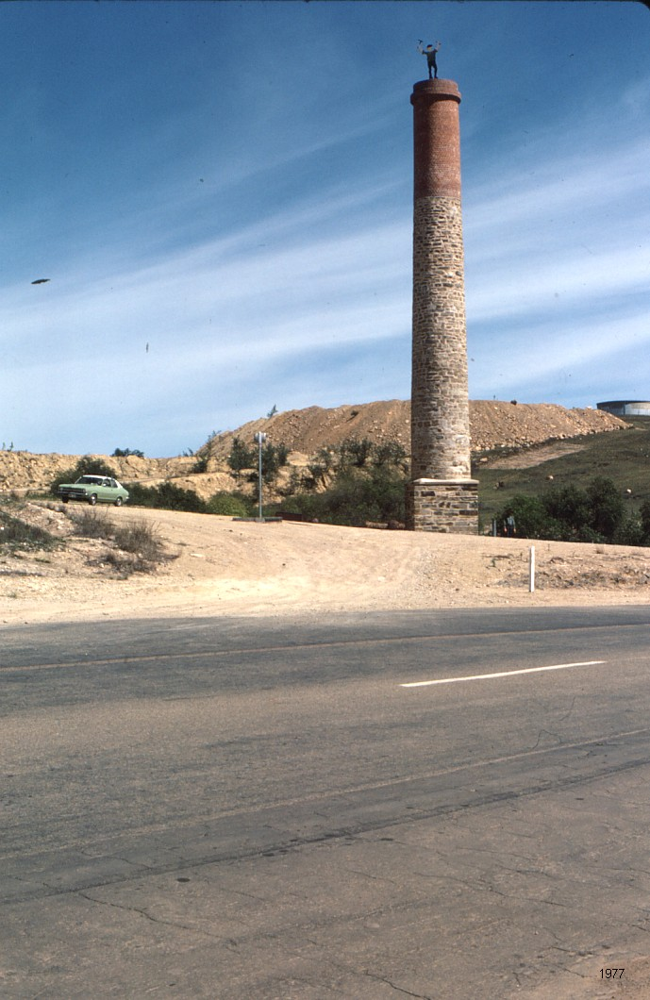
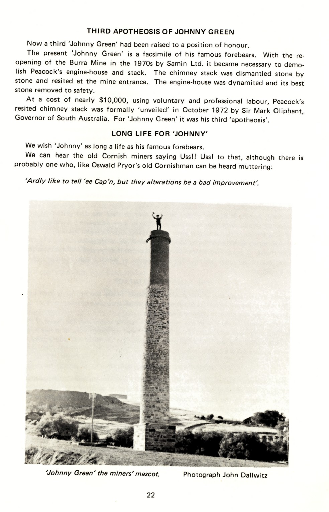
He still needed looking after. In July 1987 David Jennings and his son Andrew were seen at the top giving Johnny a fresh coat of paint. In October 1997, on the twenty-fifth anniversary of the resiting, Governor Sir Eric Neal unveiled a commemorative plaque after a champagne breakfast at the site.
That is the arrangement visitors see today.
Competing origin stories
No single origin story is secure enough to present as fact.
The shepherd and the keg
The earliest named newspaper piece is the Northern Argus of 3 July 1901. Nobody knew how the weather-beaten effigy had come to stand on the engine-house, or whom it represented. It was supposed to be the shepherd who found the ore. Asked what he wanted as a reward, he asked for a pound a week and a bullock team. One payday he bought a small keg of rum. Next morning his charred remains were found beneath the burnt remains of the keg and dray.
That is a Johnny story, not a documented biography. The historical discoverer who died by fire is Thomas Pickett, and the 1851 inquest does not match the 1901 tale. Pickett had been cutting wood in the Murray Scrub for the copper works. He was last seen drunk in the doorway of a vacant hut at Hallett’s Springs, about three miles from Kooringa. On 20 November 1851 a ten-year-old boy looking for twine found him lying on the hut floor, nearly naked and severely burnt. The jury’s verdict was that he had fallen into the fire while intoxicated. SAMA paid £5 5s. for the funeral after C. J. Ware of the Miners’ Arms pressed the directors. The reward actually associated with Pickett in later Burra telling is on the order of two payments of £10, not a pound a week and a bullock team.
No other BDA page identifies the Johnny effigy with Pickett. The 1901 paragraph used the shepherd’s death as a folk explanation of the figure on the engine-house. The inquest describes a different death. They should be kept apart.
Other claims
| Claim | Source |
|---|---|
| Nobody knew whom the weather-beaten effigy represented; it was said to portray the shepherd who found the ore, later burnt with his rum keg and dray. | Northern Argus, 3 July 1901 |
| A mine blacksmith made the figure; the writer had never heard him named. Older Burra speech called him “that theere Man upto Mine”. | Elizabeth A. Ward, “That there Man”, Memories of Burra, 13 October 1936. Likely Elizabeth Ann Ward (1861–1952). |
| Sir Henry Ayers had a representative miner made to commemorate the mine’s importance to South Australia. | Alfred Walker, reported 22 November 1933 |
| J. Beal erected the figure, if he did not make it; the name may have been Johnny Beal. | W. Beale of Wentworth, reported 13 December 1933 |
| John Beal was a roper who worked beside the iron figure at Morphett’s; his son later claimed that Beal had made it. | Reports assembled by Auhl |
| The effigy is of Henry (“Johnny”) Green, a Cornish stonemason who helped build the first engine-house. | Green family of Narrogin, W.A., reported without a source in the 2008 BHG booklet. The same booklet notes that pick and gad suggest a miner. |
| The figure was probably a local invention. Cornwall had a tradition of raising a small tree when an engine-house was completed, but Auhl found no equivalent Johnny Green in Cornish engine-house records. | Ian Auhl; repeated in the BHG booklet |
The Beal and Narrogin claims are possible, but the surviving reports do not prove them. Nor do they show that a miner named Johnny Green inspired the figure, or that the figure is a portrait of Thomas Pickett. The BHG booklet’s own close is the right one: he was the Burra Mine mascot. Maker, original name and precise meaning remain uncertain.
What Johnny Green means
Johnny brings a human outline to an industrial landscape. Engine-houses, shears and chimneys can otherwise be read only as machinery or company property; the miner-shaped figure returns the workers to the skyline.
He also embodies continuity. The material changed from wood to sheet iron to a modern facsimile. His perch changed from Roach’s to Schneider’s, Morphett’s, a sequence of 1926 proposals, the Mine Bridge and Peacock’s Chimney. Fire, weather, bullets and vandalism damaged individual bodies, but Burra repeatedly recovered or remade the figure.
His Cornish associations are strong but should be expressed carefully. Burra’s mine was profoundly shaped by Cornish labour, technology and culture, and Johnny was remembered in Cornish speech as “that theere Man upto Mine”. Auhl found no evidence, however, that the figure itself was imported as a Cornish custom. Johnny may be better understood as a Burra invention made within a Cornish mining community.
Today he is mascot, memorial, landmark and teaching device. The Burra History Group’s four-page A5 booklet Johnny Green, compiled by Julian Ratcliffe (Publisher file last saved 17 September 2008), is Auhl retold for visitors. It repeats the 1850 Gill, the 1855 Observer, Schneider’s, Morphett’s, the Ward dialect, the 1925 fire (dated Saturday the twelfth, which the court rules out), the 1967 vandals, and the third figure on Peacock’s Chimney. It adds the Narrogin Green-family claim. It is the public wording BHG itself issued.
National Trust custody of the stored iron figure is an Auhl claim, not corroborated by the 1989/2023 artefact register, the 1973 inventory instruction, or the branch’s chimney history. See the National Trust notes.
Johnny Green is Burra’s habit of looking up. He began as a miner-shaped figure above working machinery and survived as the mine itself became memory, heritage place and visitor destination. The story is not a biography of one man. It is the history of a name and silhouette repeatedly claimed by the town.
The details matter because they make that continuity concrete: two nineteenth-century figures, not one; an overlooked stop at Schneider’s; a 1901 folk tale that should not be merged with Thomas Pickett’s inquest; boys, rabbits and a 50-foot fall in December 1925; a year of silent-cop and Miner’s Rest arguments before the Mine Bridge pole; a Minespa bottle label; Les Hosking’s dated gad; and a third Johnny raised over the mine in 1972. The origins remain disputed, but the public meaning is clear: mascot, survivor and memorial—spelled Johnny.
Working chronology
| When | What the evidence says |
|---|---|
| April 1847 | Gill paints the mine. Horse-whims, not Roach’s shears. No engine-house figure in the genuine 1847 surface views. |
| 20 October 1849 | Roach’s Cornish engine begins pumping. Earliest date the wooden figure could stand on those shears. |
| February 1850 | Gill paints the figure on Roach’s shears. Versions at the Burra Regional Art Gallery (dated 10 February) and AGSA (26 February). Auhl-collection prints of this view are mislabelled 1847 and 1848. |
| 1852 | An iron Johnny is placed on Schneider’s bob-platform for the engine’s christening. |
| March 1855 | A visitor reports the wooden figure still in its “old place” at Roach’s. |
| 1857 | William Bentley’s painting shows Johnny at Schneider’s. |
| 1858 | The iron Johnny moves to the platform above Morphett’s shaft. |
| c. 1880 | Photograph: Johnny aloft on Morphett’s shears, beam and main rod still intact. |
| 3 July 1901 | Northern Argus uses the heading “Johnny Green” and tells the shepherd-and-rum-keg origin story. |
| 5 December 1925 | Fire at Morphett’s. Sedgeman and Allen smoking out rabbits. Figure falls about 50 feet; wheel breaks; Johnny “not badly damaged”. Correction 23 December: pick, gad, candle socket. |
| January–April 1926 | Council asks the McBrides for the figure; debates a silent cop, the rotunda, a shelter shed / “The Miner’s Rest”, then a high pedestal near the mine road. |
| 1929–1933 | The figure is in council custody; McBrides give it to the town; it is repaired and re-erected near Mine Bridge. |
| 13 October 1936 | Elizabeth A. Ward, “That there Man”: blacksmith origin, no name heard, midnight bogeyman. Likely Elizabeth Ann Ward (1861–1952). |
| 1949 | Minespa uses Johnny on its labels; council considers a wishing-well attraction. |
| 1960 | Jenner family: Johnny already down, guy wires broken; Methodist youth club re-erects him; coat painted from red to green. Rev. R. S. Jenner in Burra January 1960–January 1964. |
| 9 August 1966 | Transfer above the old jinker building is announced. No BITN follow-up confirms it was done. |
| 1967 | Auhl and the BHG booklet: vandals cut him down; then storage / jinker shed. Auhl says National Trust; the 1989/2023 artefact register does not corroborate that. No contemporary BITN report of the fall. |
| March–July 1967 | Camera Club fits out the Johnny Green Theatrette; in use by March 1968. |
| 25 August 1972 | Les Hosking cuts the third Johnny; the date is inscribed on its gad. |
| October 1972 | Sir Mark Oliphant unveils the resited Peacock’s Chimney with Johnny on top. |
| June–July 1987 | Venturers climb the chimney and measure Johnny at 66 inches; David and Andrew Jennings repaint him. Chamber of Mines adopts him as an industry symbol. |
| October 1997 | Twenty-fifth anniversary of the resiting; Sir Eric Neal unveils a plaque. |
| 2006–2012 | Visitor Centre figure and student mobile trail extend Johnny’s public life. |
| Present | The third figure remains on Peacock’s Chimney at the Burra Mine entrance. |
Sources and further reading
Prepared 10 August 2026; revised 12 September 2026 from the Burra Digital Archive and the local collections below.
On this site
- Jenner family note, 1960 — the drop, youth-club repair and green coat
- Johnny Green booklet, 2008 — Julian Ratcliffe’s A5 visitor text, transcribed from the Publisher file
- Burra National Trust notes — artefact register, 1973 inventory instruction, chimney campaign, Minespa silhouette
- Peacocks Resited Chimney — the three figures, the 1925 fall and the present location
- Town timeline — the 1925 fire and fall
- Mine timeline — the Gill view and Peacock chimney move
- Booklets produced by the Burra History Group
- The Mine
Ian Auhl Collection
- Publications — scans of Auhl’s printed work, including Johnny Green. Available via the Burra Digital Archive.
- Ian Auhl, Johnny Green, pp. 17–22
Burra Digital Archive
- Search: “johnny green” — semantic-search matches reviewed 12 September 2026
- Northern Argus, 3 July 1901 — name in print; shepherd, rum keg and dray
- Inquest on Thomas Pickett, 26 November 1851; Auhl, 04-pickett and 05-pickett
- 16 December 1925 — fire, fall, court; 23 December 1925 — pick, gad and candle socket
- 1926 siting debate: 6 January, 10 February, 17 February, 24 March and 14 April
- Elizabeth A. Ward, “That there Man”, 13 October 1936
- 29 August 1972 — Auhl’s research; same issue — Les Hosking and the dated gad
External sources
- Heritage South Australia, Burra Mines Historic Site — Peacock’s Chimney and Johnny as a memorial to Burra’s miners
- South Australian Heritage Places Database: Peacock’s Chimney — State Heritage Place 10020
- National Trust, Peacocks Chimney Stack
- Monument Australia, “Johnny Green” (Peacocks Chimney)
- Burra Regional Art Gallery, Our History and Art Gallery of South Australia, Gill 1850
- S. T. Gill and Burra Burra Mine 1847 and 1850 — Gill’s two campaigns; Roach’s engine from 20 October 1849
- Trove, The Burra Burra Mines and Smelting Works — March 1855 report of the figure remaining above Roach’s shaft
Print sources
- Auhl, Ian, Johnny Green (pamphlet)
- Auhl, Ian, The Story of the Monster Mine: The Burra Burra Mine and Its Townships 1845–1877, Investigator Press, Adelaide, 1986
- Auhl, Ian, Burra Glimpses of the Past, Adelaide, 1979
- Ratcliffe, Julian (comp.), Johnny Green, Burra History Group, 2008
Feature articles are researched and written by the Burra History Group. If you have information, photographs, or family stories about Johnny Green, please get in touch.